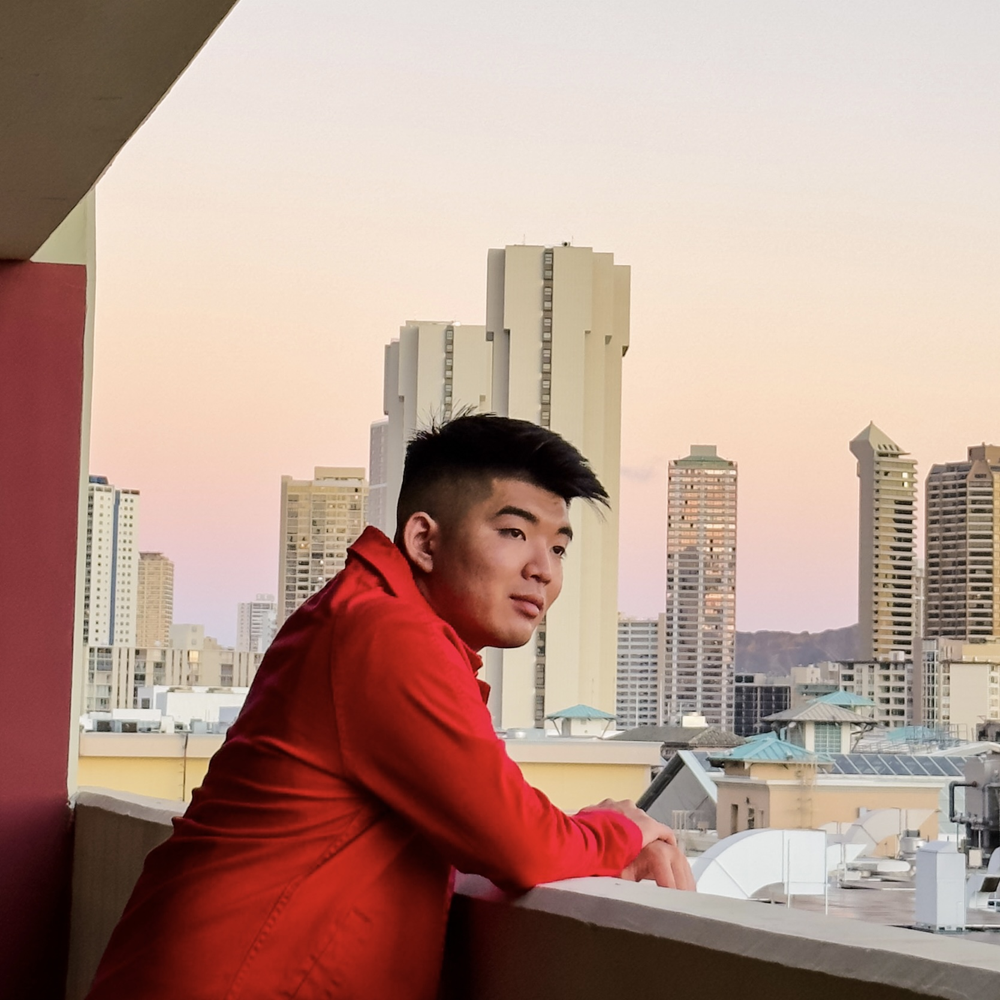

Blaze Shomida - Web Developer

Summary:
Detail-oriented and motivated individual with a background in customer service, sales, and computer science, seeking to transition into a web developer role. Adept at problem-solving, communication, and quickly learning new technologies.
Education:
Youth Challenge Academy Oahu, Kapolei, Hawaii
High School Diploma (Equivalent), 2016
Experience:
Inbound Sales Training Mentor
Spectrum
July 2021 - Present (on and off)
- Assist new hire training classes with practicing and developing sales strategies to help them succeed in their role as an inbound sales representative.
- Create tools and resources that assist new hires in the transition from classroom training to practical training that help them develop an understanding of our products and services.
- Practice call flow and sales strategies with new hires through role-plays to get them comfortable with handling a variety of different customers and situations.
- Review the new hires call’s by listening in on both live and recorded calls to find ways that can help build their confidence and strengthen their sales abilities.
- Adapt to the unique needs and learning styles of new hires to provide personalized coaching and guidance.
Inbound Sales Representative
Spectrum
March 2021 - Present
- Test and track sales on a daily basis and make necessary adjustments to consistently improve, resulting in becoming the #1 sales representative on the team and top 25% in the call center.
- Exceed sales goals provided by corporate on a monthly basis.
- Follow a process that guides customers through the sales process by asking discovery questions, customizing a product solution that benefits customers, and overcoming any objections they may have.
- Effectively communicate the benefits of products and services to both potential and existing customers.
Retail Sales Associate
T-Mobile
August 2017 - March 2019
- Help customize products and services for both personal and business customers.
- Effectively explain the use, operation, and care of products to customers.
- Exceed a goal in sales on a monthly basis by finding products and services that would benefit customers.
- Guide customers through the purchasing process by discovering their problems with their current provider and finding solutions that fit their needs.
Shift Lead
Pieology Pizzeria
August 2016 - August 2017
- Establish standards for personnel performance and customer service.
- Coordinate assignments of personnel to ensure quality customer service.
- Monitor food preparation methods, portion sizes, and garnishing and presentation of food to ensure that food is prepared and presented in an acceptable manner.
- Investigate and resolve complaints regarding food quality, service, or accommodations.
Relevant Skills:
- Familiarity with Python programming from the Summer Engineering Academy at Honolulu Community College.
- Excellent problem-solving skills, demonstrated through various engineering projects.
- Strong communication and customer service skills, developed through a range of retail and sales positions.
- Self-taught in HTML and CSS, with experience using Webflow, Figma, and Adobe XD for web design.
Early Projects
- Python Mastermind Game: Developed a functional Mastermind game during the Summer Engineering Academy at Honolulu Community College in 2016.
- Engineering Projects: Completed various engineering-related projects, including designing a speaker, solar lamp, and a car with optimal distance capabilities using household items.